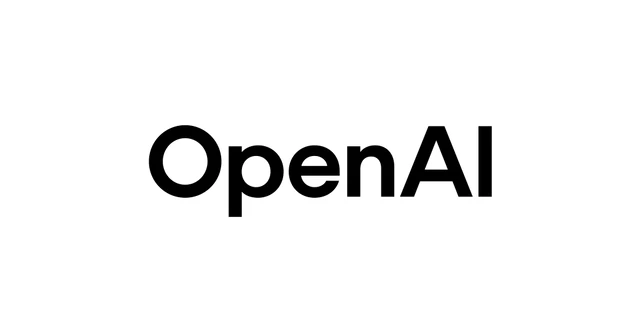

Model Stack
Powered by the best LLMs.
We route work to the right model for the job—reasoning, synthesis, or retrieval—so answers stay fast and reliable.
Claude for long‑context reasoning and
planning.
Gemini for multimodal synthesis across docs,
images, and data.
OpenAI (GPT‑4) for structured outputs and
tool‑use flows.
Mistral for cost‑efficient throughput and
fast
iterations.
Dynamic routing selects the best model based on cost, latency, and confidence.
Routing Engine
Latency
Cost
Confidence


